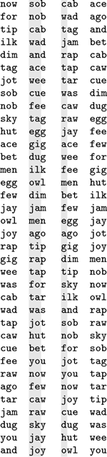
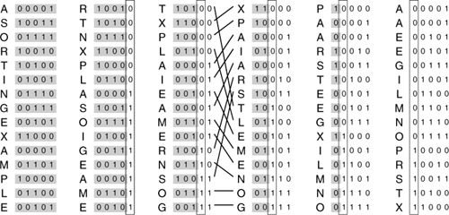
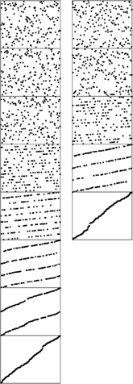

C++ Programming Robert Sedgewick - Princeton University Addison Wesley Professional Algorithms in C++, Parts 1–4: Fundamentals, Data Structure, Sorting, Searching, Third Edition C++ Programming Robert Sedgewick - Princeton University Addison Wesley Professional Algorithms in C++, Parts 1–4: Fundamentals, Data Structure, Sorting, Searching, Third Edition
10.5. LSD Radix Sort
An alternative radix-sorting method is to examine the bytes from right to left. Figure 10.14 shows how our three-letter word sorting task is accomplished in just three passes through the file. We sort the file according to the final letter (using key-indexed counting), then according to the middle letter, then according to the first letter.
Three-letter words are sorted in three passes (left to right) with LSD radix sorting.

It is not easy, at first, to be convinced that the method works; in fact, it does not work at all unless the sort method used is stable (see Definition 6.1). Once stability has been identified as being significant, a simple proof that LSD radix sorting works is easy to articulate: After putting keys into order on their i trailing bytes (in a stable manner), we know that any two keys appear in proper order (on the basis of the bits so far examined) in the file either because the first of their i trailing bytes are different, in which case the sort on that byte put them in the proper order, or because the first of their ith trailing bytes are the same, in which case they are in proper order because of stability. Stated another way, if the w - i bytes that have not been examined for a pair of keys are identical, any difference between the keys is restricted to the i bytes already examined, and the keys have been properly ordered, and will remain so because of stability. If, on the other hand, the w - i bytes that have not been examined are different, the i bytes already examined do not matter, and a later pass will correctly order the pair based on the more-significant differences.
Program 10.4. LSD radix sort|
This Program implements key-indexed counting on the bytes in the words, moving right to left. The key-indexed counting implementation must be stable. If R is 2 (and therefore bytesword and bitsword are the same), this program is straight radix sort—a right-to-left bit-by-bit radix sort (see Figure 10.15).
template <class Item>
void radixLSD(Item a[], int l, int r)
{ static Item aux[maxN];
for (int d = bytesword-1; d >= 0; d--)
{
int i, j, count[R+1];
for (j = 0; j < R; j++) count[j] = 0;
for (i = l; i <= r; i++)
count[digit(a[i], d) + 1]++;
for (j = 1; j < R; j++)
count[j] += count[j-1];
for (i = l; i <= r; i++)
aux[count[digit(a[i], d)]++] = a[i];
for (i = l; i <= r; i++) a[i] = aux[i];
}
}
|
This diagram depicts a right-to-left bit-by-bit radix sort working on our file of sample keys. We compute the ith column from the (i - 1)st column by extracting (in a stable manner) all the keys with a 0 in the ith bit, then all the keys with a 1 in the ith bit. If the (i - 1)st column is in order on the trailing (i - 1) bits of the keys before the operation, then the ith column is in order on the trailing i bits of the keys after the operation. The movement of the keys in the third stage is indicated explicitly.

The stability requirement means, for example, that the partitioning method used for binary quicksort could not be used for a binary version of this right-to-left sort. On the other hand, key-indexed counting is stable, and immediately leads to a classic and efficient algorithm. Program 10.4 is an implementation of this method. An auxiliary array for the distribution seems to be required—the technique of Exercises 10.17 and 10.18 for doing the distribution in place sacrifices stability to avoid using the auxiliary array.
LSD radix sorting is the method used by old computer-card–sorting machines. Such machines had the capability of distributing a deck of cards among 10 bins, according to the pattern of holes punched in the selected columns. If a deck of cards had numbers punched in a particular set of columns, an operator could sort the cards by running them through the machine on the rightmost digit, then picking up and stacking the output decks in order, then running them through the machine on the next-to-rightmost digit, and so forth, until getting to the first digit. The physical stacking of the cards is a stable process, which is mimicked by key-indexed counting sort. Not only was this version of LSD radix sorting important in commercial applications in the 1950s and 1960s, but it was also used by many cautious programmers, who would punch sequence numbers in the final few columns of a program deck so as to be able to put the deck back in order mechanically if it were accidentally dropped.
Figure 10.15 depicts the operation of binary LSD radix sort on our sample keys, for comparison with Figure 10.3. For these 5-bit keys, the sort is completed in five passes, moving right to left through the keys. Sorting records with single-bit keys amounts to partitioning the file such that all the records with 0 keys appear before all the records with 1 keys. As just mentioned, we cannot use the partitioning strategy that we discussed at the beginning of this chapter in Program 10.1, even though it seems to solve this same problem, because it is not stable. It is worthwhile to look at radix-2 sorting, because it is often appropriate for high-performance machines and special-purpose hardware (see Exercise 10.38). In software, we use as many bits as we can to reduce the number of passes, limited only by the size of the array for the counts (see Figure 10.16).
This diagram shows the stages of LSD radix sort on random 8-bit keys, for both radix 2 (left) and radix 4, which comprises every other stage from the radix-2 diagram (right). For example, when two bits remain (second-to-last stage on the left, next-to-last stage on the right), the file consists of four intermixed sorted subfiles consisting of the keys beginning with 00, 01, 10, and 11.

It is typically difficult to apply the LSD approach to a string-sorting application because of variable-length keys. For MSD sorting, it is simple enough to distinguish keys according to their leading bytes, but LSD sorting is based on a fixed-length key, with the leading keys getting involved for only the final pass. Even for (long) fixed-length keys, LSD radix sorting would seem to be doing unnecessary work on the right parts of the keys, since, as we have seen, only the left parts of the keys are typically used in the sort. We shall see a way to address this problem in Section 10.7, after we have examined the properties of radix sorts in detail.
Exercises | 10.32 Using the key generator of Exercise 10.19, run LSD radix sort for N = 103, 104, 105,and 106. Compare its performance with that of MSD radix sort. | | 10.33 Using the key generators of Exercises 10.21 and 10.23, run LSD radix sort for N = 103, 104, 105, and 106. Compare its performance with that of MSD radix sort. | | 10.34 Show the (unsorted) result of trying to use an LSD radix sort based on the binary quicksort partitioning method for the example of Figure 10.15. | |  10.35 Show the result of using LSD radix sort on the leading two characters for the set of keys now is the time for all good people to come the aid of their party. 10.35 Show the result of using LSD radix sort on the leading two characters for the set of keys now is the time for all good people to come the aid of their party.
| |  10.36 Develop an implementation of LSD radix sort using linked lists. 10.36 Develop an implementation of LSD radix sort using linked lists.
| | 10.37 Find an efficient method that (i) rearranges the records of a file such that all those whose keys begin with a 0 bit come before all those whose keys begin with a 1 bit, (ii) uses extra space proportional to the square root of the number of records (or less), and (iii) is stable. | | 10.38 Implement a routine that sorts an array of 32-bit words using only the following abstract operation: Given a bit position i and a pointer into the array a[k], rearrange a[k], a[k+1], ..., a[k+63] in a stable manner such that those words with a 0 bit in position i appear before those words with a 1 bit in position i. |
|